CAD 项目
-
项目 1：大学机械设计理论课程项目
我一个由五名学生组成的团队中，创建了一个自上而下的 CAD 模型，并在产品数据管理系统 (PDM 系统) 中进行管理。给定设计任务的处理是机械设计理论课程中融入的 CAD 和 PDM 培训概念的一部分。任务所需的知识是通过E-Learning学习自学获得的，并通过Creo PTC软件应用得到巩固。在座谈会上对结果进行答辩，以确保实现学习目标。
在该项目中我都达到了包括但不限于如下的要求:解释产品数据管理系统的任务和可能性;创建进阶的CAD模型元素：拉动特征、拉伸混合特征、壳特征和基准曲线;在模型中创建参数和关系等等。
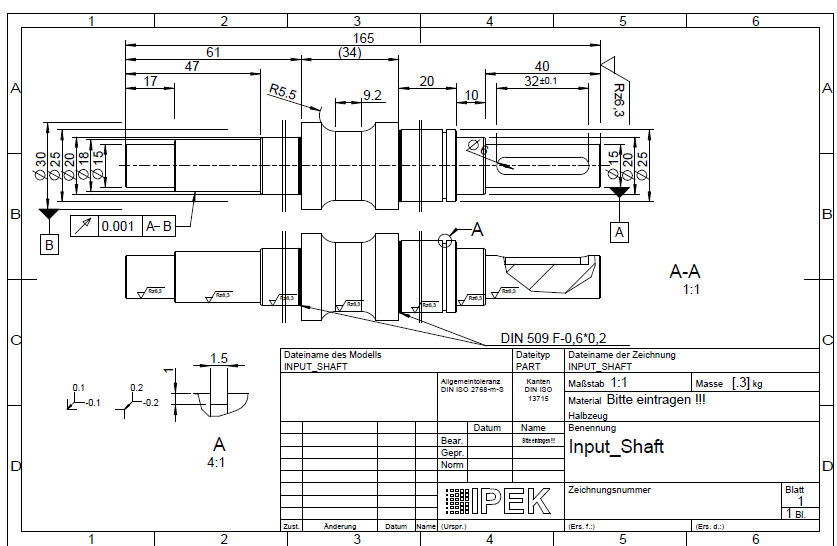 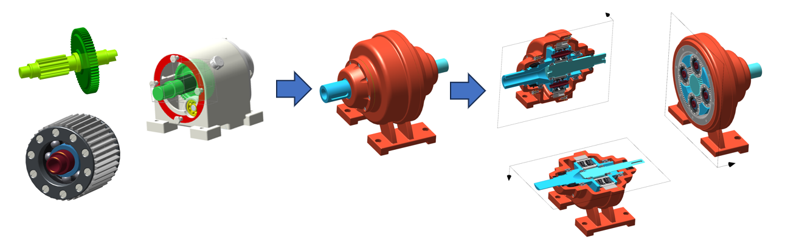 -
项目 2：飞机引擎建模
我利用网络的教学资源，使用Creo PTC从零开始制作了一个飞机引擎的3D模型。
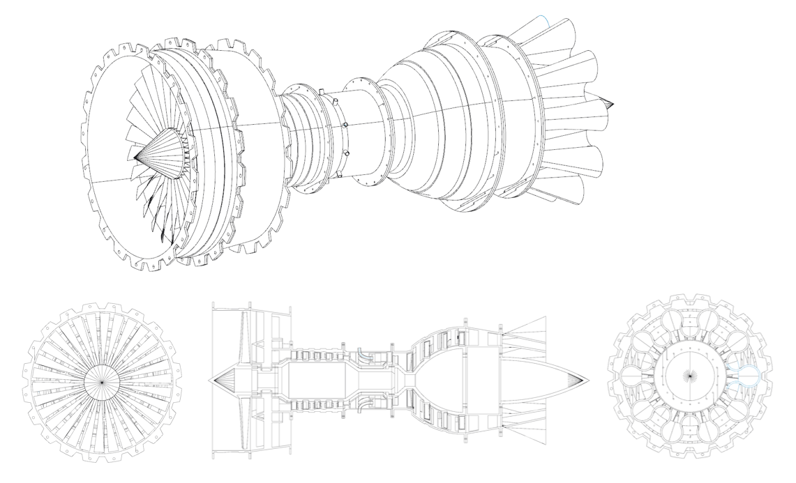 -
项目 3：铁轨及列车车轮建模
在斯泰必鲁斯进行实习期间，我利用Creo PTC建立了一个简单的铁轨和火车车轮接触的立体模型，用以研究能够减少列车驶过时噪音产生量的方法。通过模型可以看出有多种可能的减振方法，包括弹簧，阻尼器，安装于车轮甚至铁轨枕木上的能量吸收器等等。
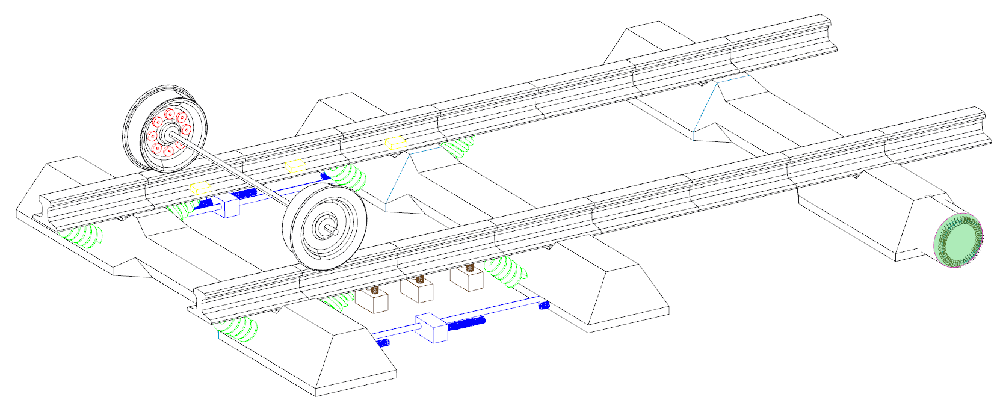 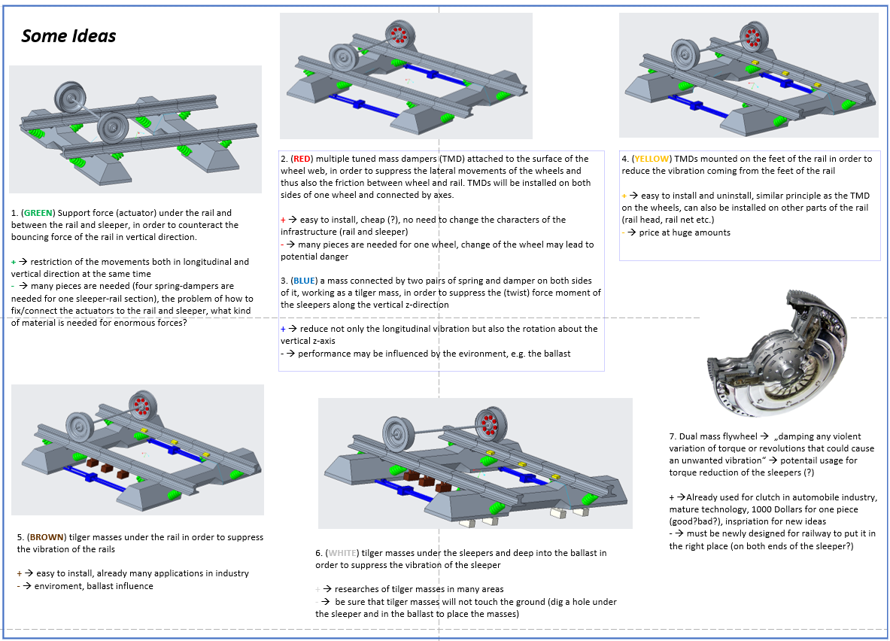
Excel VBA 项目
-
项目 1：VBA数据库管理
利用网络教程使用VBA程序学习并制作数据库表结构管理软件，提供了 增、删、改、查 相关的操作，可以用于 Access 或 SQL Server 数据库。它通过ADO（ActiveX Data Objects）连接数据库，并执行SQL语句进行操作。
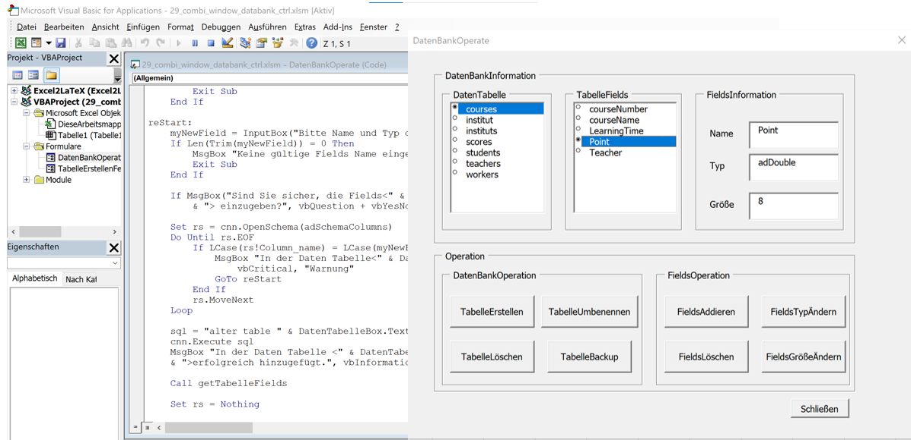
MATLAB/Simulink 项目
-
项目 1：本科毕业设计
使用 MATLAB建立模型,进行数据处理、绘图、动态更新，定义滚珠丝杠（Ball Screw）的特性，包括其几何参数、材料属性以及轴向刚度计算,处理测量数据并计算轴承的等效载荷，使用寿命及预期剩余寿命，并监控数据绘图。
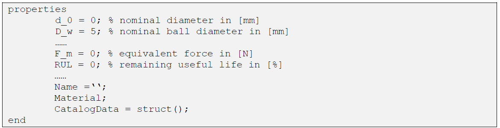 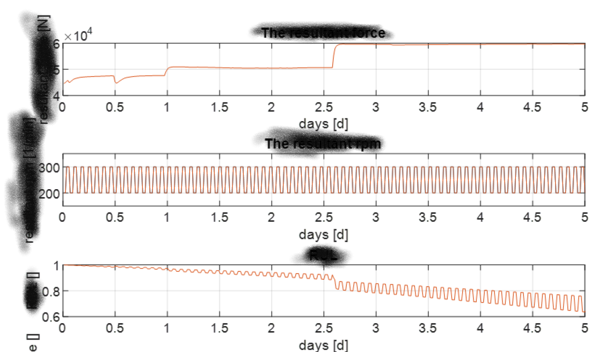 -
项目 2：研究生毕业设计
使用 MATLAB代码计算速度相关的摩擦系数，包括定义摩擦模型，数值积分计算，用泰勒展开近似计算摩擦力等。之后研究摩擦相关的双自由度动力系统，分析它在不同条件下的运动特性，并进行稳定性分析。
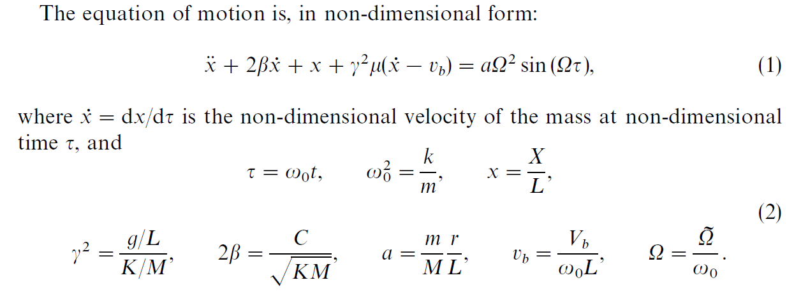 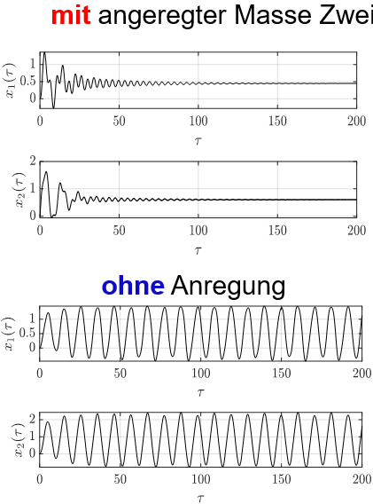 -
项目 3：铁路减振降噪模型模拟仿真
使用MATLAB代码建立了列车悬架的 LQR 控制器，通过 Simulink 比较主动/被动悬架的性能。此外使用Simulink建立了不同的主动降噪算法模型，对降噪效果进行比较。
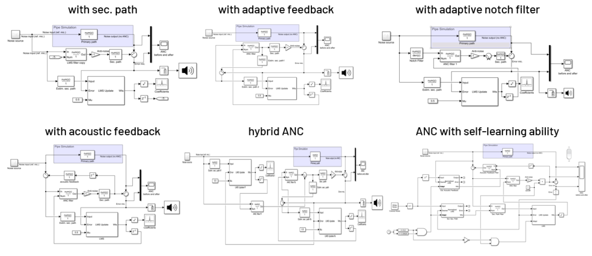 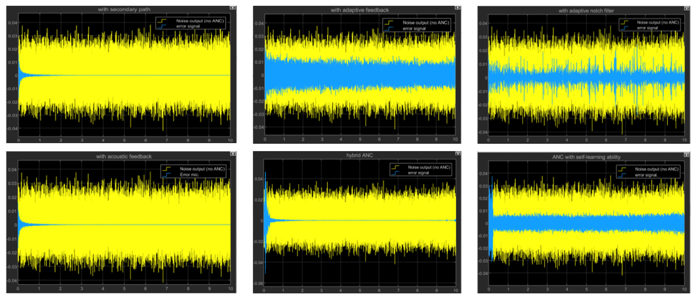
Python 项目
-
项目 1：使用 pygame 编写的 2D 射击游戏
使用 pygame 编写的 2D 射击游戏，玩家控制一只兔子（Bunny），通过射箭攻击来保卫城堡不受獾（Badgers）的袭击。玩家控制角色，可以使用 WASD 键移动，鼠标点击发射弓箭并控制发射角度，獾作为敌人定期从屏幕右边生成并向左移动攻击城堡，受到獾的攻击会损失生命值。
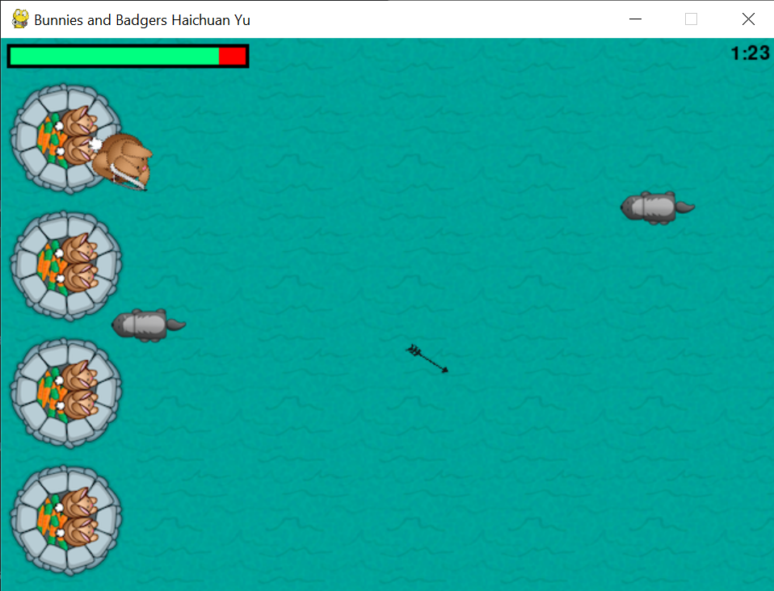 -
项目 2：使用python爬取酒店评价
使用python代码生成一个完整的 Booking.com 酒店评论爬取和词云生成工具，为旅行做好充足准备!
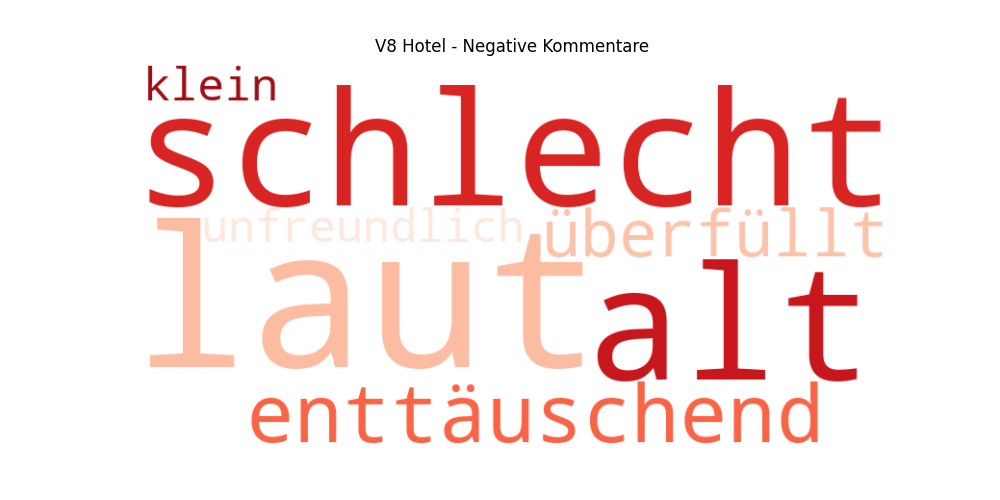 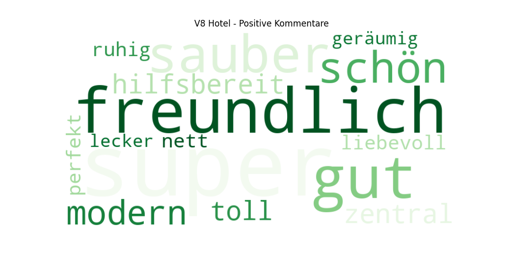 -
项目 3：使用python爬取德国及全球工业行业最新信息
使用python的库requests 或 selenium 爬取各个网站的相关新闻; 解析符合关键词的新闻;生成 PDF 报告。
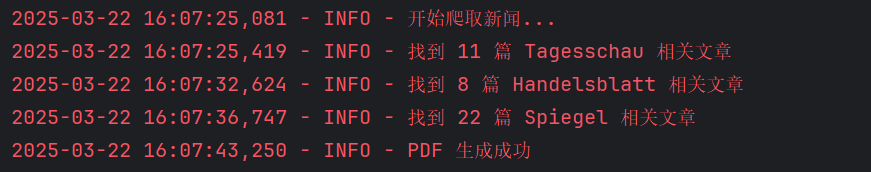 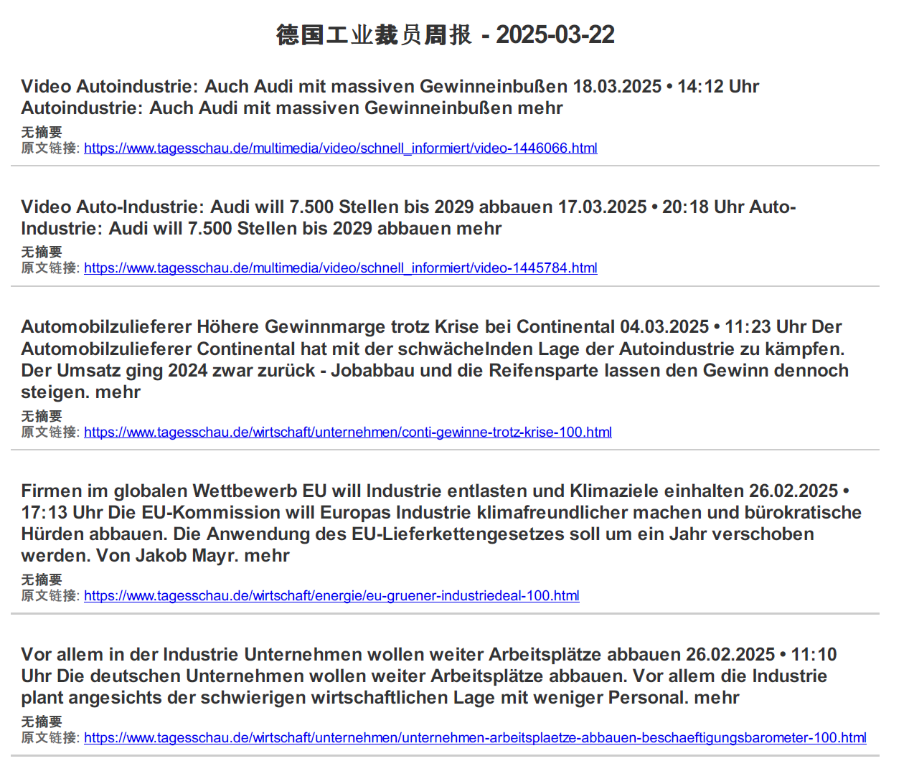 -
项目 4：使用python总结工作细节并提出改进建议
在梅赛德斯奔驰公司的车辆静态调试工作期间利用python编写程序，总结不同阶段车辆电子控制单元的错误率，以及每辆车的平均处理时长，分析原因并提出改进意见。
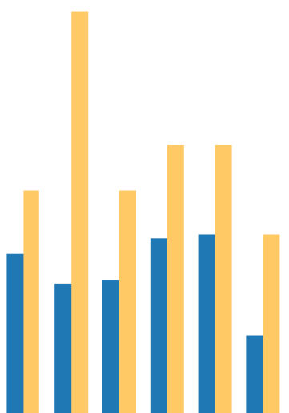
其他项目
-
DyFaSim; SimulationX
-
NiSP - Monaco DTS
-
CANoe